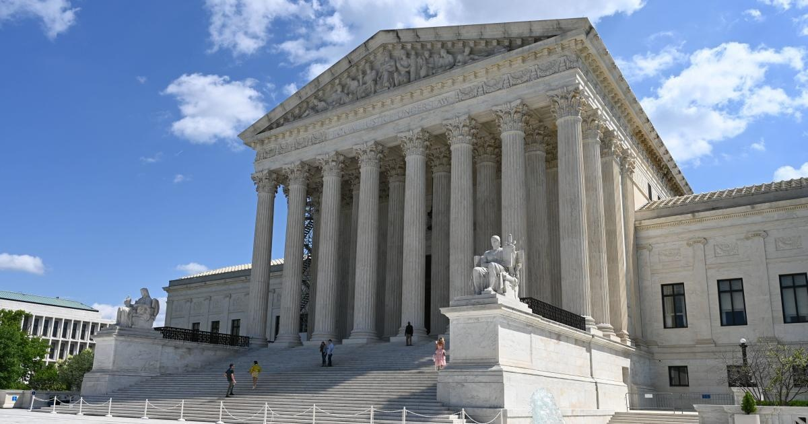

Supreme Court agrees to hear case that could curb power of federal agenciesWashington — The Supreme Court said Monday that it will take up a dispute between the Biden administration and commercial fishing companies that presents the court with a chance to overrule a nearly 40-year-old decision giving deference to federal agencies, one which is often criticized by conservatives. In the case, which will be heard by the justices in their next term, the Supreme Court has been asked to overrule Chevron v. National Resources Defense Council. In that ruling from 1984, the Supreme Court said courts should defer to an agency's reasonable interpretation of statutes when the laws are ambiguous. Justice Ketanji Brown Jackson recused herself from the case, since she was on the lower court's three-judge panel that heard arguments in the dispute last year. At least two of the justices, Clarence Thomas and Neil Gorsuch, have been critical of the Chevron doctrine, and a growing movement of conservatives believe the decision grants agencies too much power and has led to regulatory overreach. The case now gives the high court, with a 6-3 conservative majority, the opportunity to curb the power of federal agencies when interpreting the statutes approved by Congress. The legal battle before the Supreme Court involves the Magnuson-Stevens Act, a 1976 law that governs management of marine fisheries in federal waters. It designates the commerce secretary to develop a comprehensive fishery management program to prevent overfishing and ensure conservation of limited fishery resources. Under the law, a fishery management plan may require at least one federal observer to be carried on board domestic fishing vessels when they're at sea. In 2017, the New England Fishery Management Council, one of eight regional councils that advise the secretary on fishery management plans, finalized a proposal to amend the plan for the Atlantic herring fishery to create an industry-funded monitoring program. The proposal included provisions that required vessel owners, for some trips, to arrange for monitoring and pay for the services rendered on a given trip. A group of four family-owned and operated fishing companies in the Atlantic herring fishery sued the federal government in February 2020 over the at-sea monitoring requirements, alleging that the Magnuson-Stevens Act did not authorize the National Marine Fisheries Service to mandate industry-funded monitoring in the herring fishery. A federal district court in Washington sided with the fisheries agency, citing the Chevron doctrine. In its decision, the district court said provisions of the Magnuson-Stevens Act granted "broad authority" to the National Marine Fisheries Service to create rules necessary to carry out conservation and management measures. The service is a division of the Commerce Department. A divided three-judge panel on the U.S. Court of Appeals for the District of Columbia Circuit agreed, applying the Chevron framework and finding the agency acted within the scope of its statutory authority when it adopted a plan that mandates industry-funded at-sea monitoring. The D.C. Circuit deferred to the National Marine Fisheries Service and held that its interpretation of the Magnuson-Stevens Act is "reasonable." The fishing companies appealed to the Supreme Court, warning in a filing that the appeals court's decision "poses a dual threat to efforts to rein in agency overreach." The ruling, lawyers for the four companies wrote, "authorizes agencies to force the governed to quarter and pay for their regulatory overseers without clear congressional authorization. And it perceives ambiguity in statutory silence, where the logical explanation for the statutory silence is that Congress did not intend to grant the agency such a dangerous and uncabined authority." In urging the Supreme Court to take up the dispute, they argued that the case presents the justices with the chance to "impose sensible limits on agency deference." Chevron "has been a disaster in practice," attorneys for the fishing companies wrote. "Lower courts see ambiguity everywhere and have abdicated the core judicial responsibility of statutory construction to executive-branch agencies. The exponential growth of the Code of Federal Regulations and overregulation by unaccountable agencies has been the direct result." But the Biden administration urged the Supreme Court to leave its 1984 decision intact, writing that though "reasonable minds may disagree" about Chevron's application, it "does not call into question the workability of the framework itself." "Petitioners maintained in the lower courts that their interpretation of the act should prevail even under the existing Chevron framework, which they affirmatively invoked," Solicitor General Elizabeth Prelogar wrote. "The lower courts held otherwise, and petitioners now seek to jettison the framework itself. But petitioners identify no reason to think that their interpretation would have prevailed in the absence of Chevron." The Chevron decision, the Biden administration wrote, "also promotes political accountability, national uniformity, and predictability, and it respects the expertise agencies can bring to bear in administering complex statutory schemes." While the Supreme Court has decided cases involving the Chevron doctrine before, it has stopped short of overruling the 1984 decision, even amid growing complaints that it has allowed agencies to amass too much power. While serving on the U.S. Court of Appeals for the 10th Circuit, Gorsuch wrote in 2016 that Chevron "seems no less than a judge-made doctrine for the abdication of the judicial duty." In 2022, he wrote that the Chevron doctrine "deserves a tombstone no one can miss." Thomas, too, has been critical of the Chevron decision, writing in a 2015 concurrence that it "wrests from courts the ultimate interpretative authority to 'say what the law is' and hands it over to the Executive." for more features. |
 |